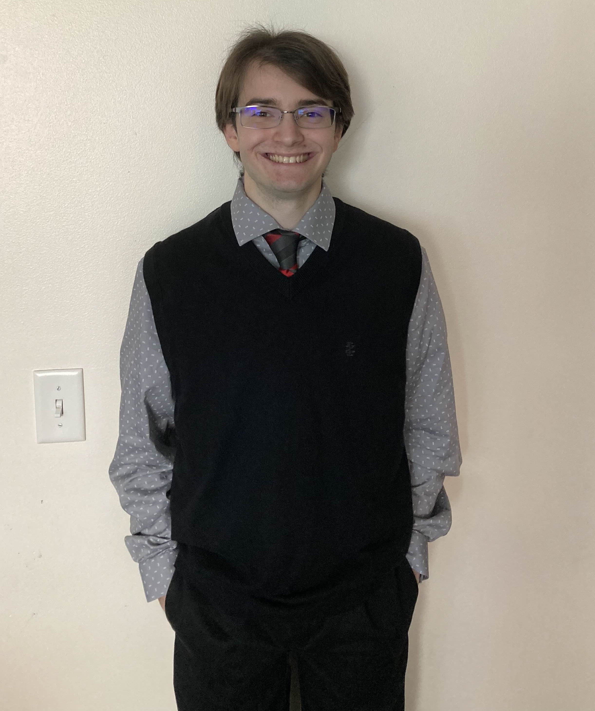

My name is Evan Fankhauser. I graduated the from Rochester Institute of Technology with a bachelor's degree in
for Game Design and Development, Summa Cum Laude. I was born and raised in State College, Pennsylvania. I graduated from the
State College Area High School in 2021.
I grew up playing games, and they have always brought me great joy. They helped me to connect with those around me,
and people from farther away. Towards the end of high school, I decided to spend my career to give others that
chance at connection.
Currently, I am looking for work in the games industry to use as co-op credit to complete my degree.
In the future, I hope to find a game studio I can call home. I plan to work primarily in programming
or level design, but I am also interested in narrative. My dream project is a souls-like that brings people together.
My favorite games include Pokemon Soul Silver, Elden Ring, Astro Bot, Destiny 2,
Hades, and Helldivers 2. Moving away from the digital side, my favorite board game is
Carcassone. I have many fond memories of playing Dungeons and Dragons, though I haven't
managed to play for some time. I also play Magic: The Gathering and Star Wars Unlimited.
More recently, I have been building an army for Warhammer 40,000.
The most important game to my career is Dark Souls Remastered. This is the game that made me
want to make games.
Skills:
I am proficient in C#, C++, JavaScript, TypeScript, HTML and CSS.
I have used Microsoft Visual Studio and Visual Studio Code extensively.
I have working knowledge of Autodesk Maya and Adobe Substance Painter, and have some experience with Blender.
I have also done some work with Unreal Engine Blueprints, Adobe Photoshop and GIMP.